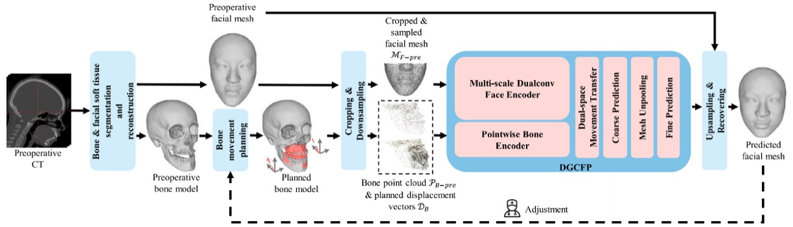
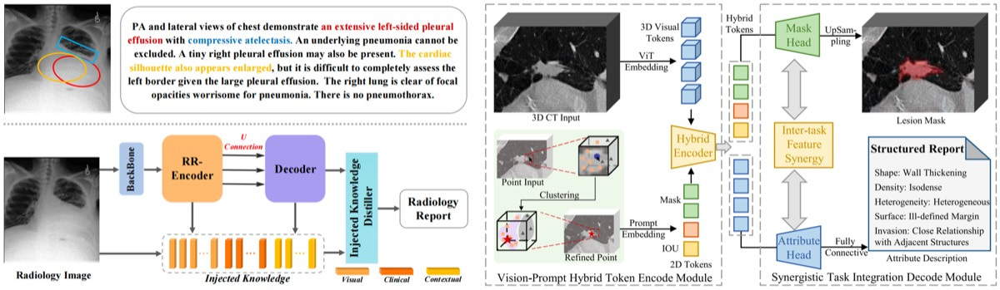
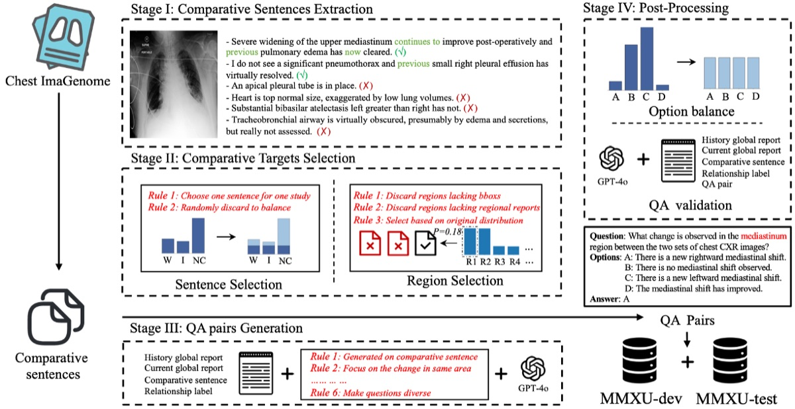
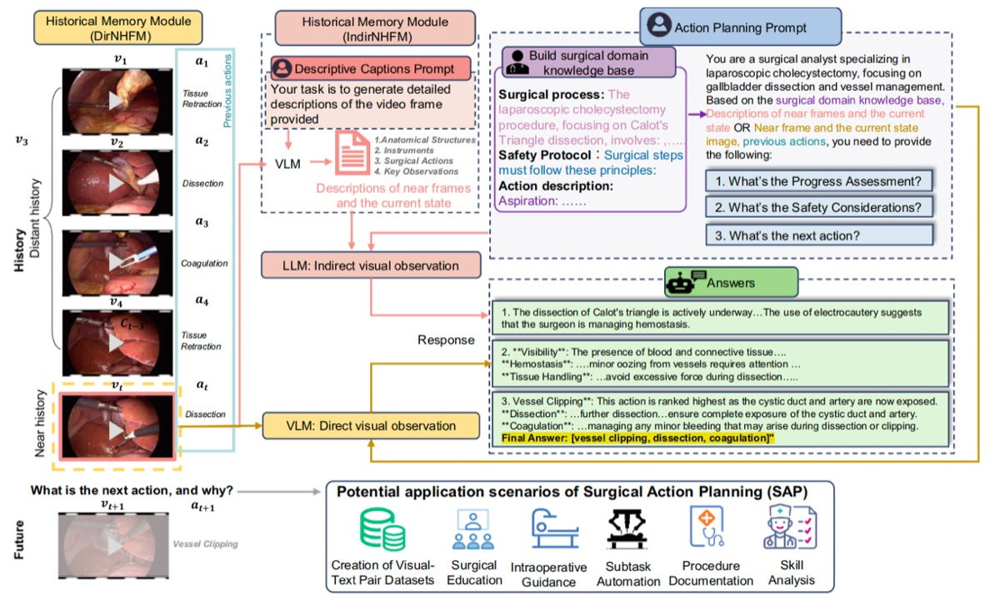

✦ Multi-modality Clinical Decision Making Applications
We apply AI to real clinical problems — from surgical planning and radiology reporting to disease progression tracking and postoperative outcome prediction. These projects span multiple modalities and specialties, with a shared emphasis on practical utility and clinical interpretability.


A dual graph convolution network that models bone movement relationships to predict postoperative facial appearance from preoperative CT, supporting surgical planning for orthognathic and maxillofacial procedures.

KiUT: Knowledge-injected U-Transformer for Radiology Report Generation · Interactive Segmentation and Report Generation for CT Images
Two complementary works on automated radiology reporting: KiUT injects structured medical knowledge into a U-shaped transformer for higher-quality report generation, while the interactive segmentation work couples region-level visual grounding with report generation for CT images.

MMXU: A Multi-modal and Multi-X-ray Understanding Dataset for Disease Progression
A large-scale multimodal dataset pairing longitudinal X-ray series with clinical text, designed to benchmark disease progression understanding — a task that requires models to reason about change over time across both image and language modalities.

Surgical Action Planning with Large Language Models
Leverages LLMs to generate structured surgical action plans from preoperative information, providing step-by-step procedural guidance that can assist surgeons in preparation and intraoperative decision support.
✦ We welcome collaborations with clinicians and medical institutions on applied AI projects. If you are interested in working with us, feel free to get in touch.